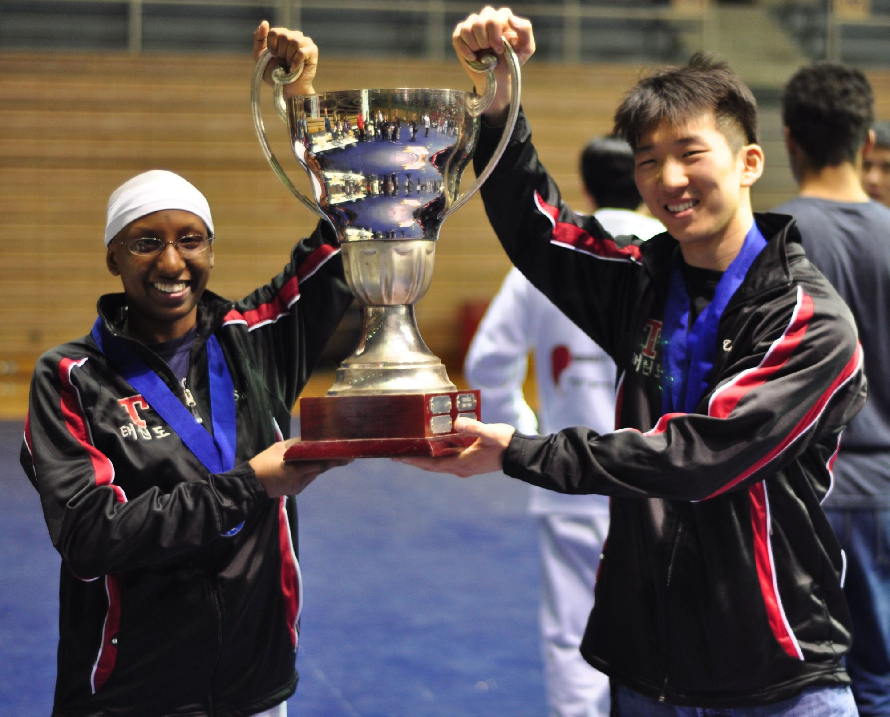
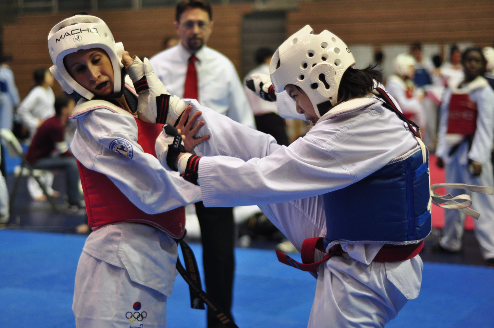
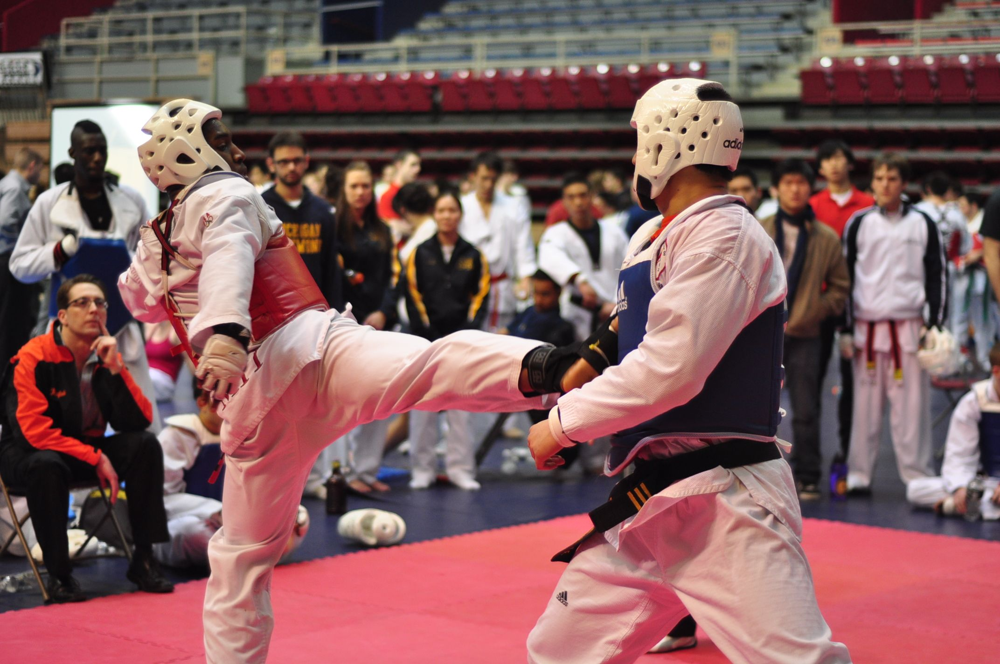

SEASON SUMMARY 2010-2011
{kind=link}
MIT Places 2 students on US National Collegiate Taekwondo Team at National Collegiate Championships!
The National Collegiate Taekwondo Championships were held at the University of California, Davis on April 9 and, 10, 2011. Team captain Erika Lee ('12) and instructor Rene Chen (alum, '07), qualified for the US National Collegiate Taekwondo Team! They will represent the United States in team, pairs and individual forms at the Summer World University Games in Shenzen China. The team is very proud and it is the third year in a row that MIT is represented on the US national collegiate Taekwondo team. Coach Dan Chuang was named one of the coaches of the US team, and was also named National Collegiate Taekwondo Association Vice President.
Also, MIT took second overall at the Championships, held at the University of California, Davis. Team captain Erika Lee ('12) earned a silver in black belt sparring, and club officers Dan Sauza ('11), Becca Hung ('11) along with Nicole Kang ('13), alumni Mary Hong ('10) and team captain Jason Uh ('11) all earned gold medals in black belt forms, among many other medals on the 21-person team. MIT beat out a number of very tough schools, including UC Berkeley, Princeton, UC Davis, and UC San Diego for the overall 2nd place trophy.
It was an end to our remarkable run of 3 consecutive 1st place finishes as a team but we are confident that we can get it back next year!
In the black belt division, MIT also placed 2nd overall, just behind Berkeley, and ahead of Princeton, UC Davis, Stanford and UCLA. It was our highest black belt division finish in the history of the club.
MIT Wins Eastern Collegiate Taekwondo Conference (ECTC) Title!On April 2, 2010, MIT's Sport Taekwondo Club brought 35 athletes to compete at the team's fifth tournament of the year at the University of Pennsylvania. Going into this final tournament of the season (the previous 4 were hosted by MIT, Cornell, Princeton and West Point), MIT entered with a slim overall lead in points over Cornell, 1589 to 1425. The team came through with a huge win, extending their lead by over 200 points to win the ECTC cup, placing first among over 25 schools! It was a sweet victory after coming in second last year to Cornell. You can see our team co-captain Jason Uh and team Vice President Tara Sarathi in the photo below, as well as some nice action shots from that tournament.
|  |  |  |
{kind=link}
{kind=link}
{kind=link}
MIT Sport Taekwondo Instructor Takes Bronze at US Taekwondo Open
Bobby Ren ('05), a club alumni instructor, took a bronze medal in men's individual 19-30 year old forms at the US Open Taekwondo Championships held February 17-21, 2011 in Austin, Texas. He beat out a strong international field. Club instructors Aziz Abdellahi (Grad) and alumni instructor Richard-Duane Chambers ('07) also advanced to the second round in lightweight sparring at this largest international tournament held in the United States.
MIT Hosts Largest Collegiate Taekwondo Event in US HistoryThis past fall, on Oct. 23, 2010, the MIT Sport Taekwondo Club hosted the largest all-collegiate Taekwondo event in US history, with 451 athletes in attendance! Extremely gratifying was the fact the we also won this very competitive event. Standouts included captains Erika Lee ('12) and Jason Uh (Grad) who took 2nd and 1st place in black belt forms, respectively, and our women's beginner sparring team of Laura Deming '13, Karine Yuki '13, and Xuan Yang '12 who took a gold medal in a very competitive division.
MIT Sport Taekwondo Raises Money for Disaster Relief in JapanThe Sport Taekwondo club is doing its annual "Kickathon" fundraiser this Sunday, May 1 on Kresge Oval to raise money in equal parts for the team's competitions and for disaster relief in Japan. Last year we raised over $3,000 and we are hoping to beat that number this year.